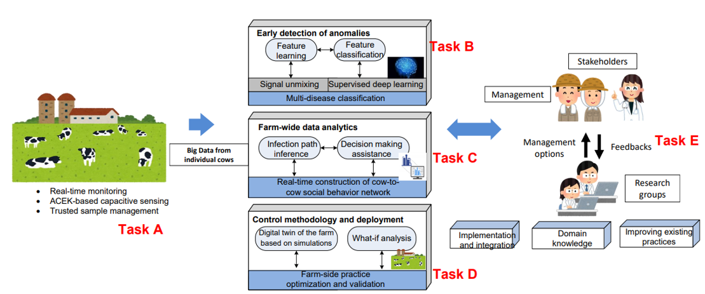

Challenges
- Disease Impact on Economics: The US dairy producers are estimated to lose over $2 billion annually. Prevalent diseases such as mastitis, lameness, and metabolic alterations significantly affect the health of dairy herds, impacting milk production and quality.
- Difficulty in Early Detection: Effective control of these diseases is difficult by challenges in early detection and diagnosis, particularly in identifying subclinical forms, which are more common and easily transmitted among the herd before they can be identified.
- Cost-Effective Solutions: Implementing practical solutions for disease control and monitoring in dairy farms is constrained by the need for cost-effective solutions that can be easily deployed, as expensive solutions are less likely to be adopted in the field.
Solutions
- Integrated Sensing and AI Analytics Framework: Development of a comprehensive framework that combines advanced sensing technologies and AI-driven data analytics for real-time detection and control of multiple diseases in dairy herds.
- Farm-wide Disease Control Strategy: Implementation of a farm-wide control strategy using data-driven decision-making assistance and digital twin simulations to analyze and manage disease spread.
- Cost-effective Disease Monitoring: Establishment of a sustainable and cost-effective approach for continuous monitoring of health indicators such as somatic cell count (SCC) and pathogens, leveraging novel sensing methods, machine learning, and sensor-based networks.
Innovations
- Advanced Sensing Technologies: Development of novel biosensors capable of detecting mastitis-causing bacteria and other pathogens with improved accuracy and efficiency.
- Machine Learning for Anomaly Detection: Utilization of advanced machine learning techniques for early detection of abnormal health indicators and behavioral changes, improving the speed and accuracy of disease diagnosis.
- Comprehensive Tracking and Control: Integration of tracking systems and simulation models to track cow movement and interaction, aiding in the prediction and control of disease transmission within the herd.

Scientific Impacts
- Future Precision Agriculture: Through integration of advanced sensing, AI, and data analytics in dairy farming, our proposed work promises a significant leap in precision agriculture. By facilitating early disease detection and real-time herd management, it investigates best practices for technology-driven agricultural practices, potentially influencing a wide range of farming activities and leading to more efficient and sustainable agricultural models globally.
- Enhancing Global Biosecurity: The novel biosensor technologies and disease tracking methods developed in this project can be adapted for broader biosecurity applications. This includes monitoring and controlling pathogen spread in various environmental settings, thus contributing significantly to global health security and disease management in both animal and human populations.
- Improving Food Safety and Quality: By enabling early detection and control of diseases in dairy herds, the project contributes to the safety and quality of the dairy supply chain. This has far-reaching implications for food safety standards, impacting consumer health and trust, and potentially influencing global food safety policies and practices.
Broader Impacts
- Advancing Dairy Industry Sustainability: This project offers an integrated, low-cost solution for effective control of prevalent diseases in dairy herds, particularly mastitis. By enhancing disease management, the project directly contributes to the economic viability and sustainability of dairy farms, not only in the US but also globally. Improved health management of dairy herds leads to increased milk production and quality, positively impacting the entire dairy supply chain from farm to consumers.
- Implications for Biosecurity and Healthcare: The technologies developed in this project, particularly the advanced biosensors and real-time monitoring systems, have significant applications in biosecurity and healthcare. They offer potential for cost-effective, rapid diagnostics and continuous health monitoring, revolutionizing patient care and disease management. This technology can be crucial in early disease detection and in managing potential biosecurity threats.
- Interdisciplinary Education and Student Development: The project will play a pivotal role in providing interdisciplinary training to students, encompassing fields like veterinary science, engineering, data analytics, and AI. The development of new cross-disciplinary educational modules based on this research will prepare a new generation of students, both undergraduate and graduate, with the skills needed in these emerging fields, fostering innovation and expertise in precision agriculture and beyond.